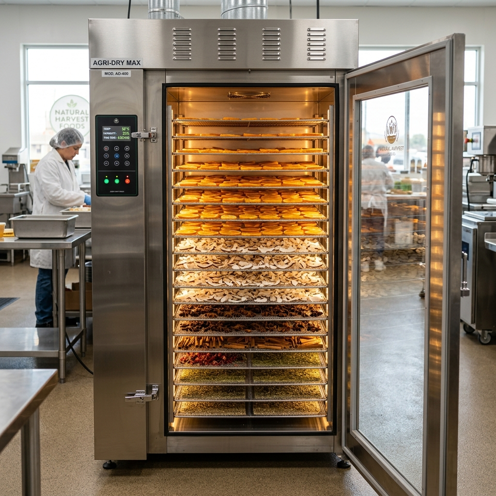

Sustaining Freshness, Eliminating Wastage
When the COVID-19 pandemic broke out in 2020, transportation limits and market closures left small farmers in Marangattupilly unable to sell their crops. Heavy rain exacerbated the issue, rotting tons of harvested coconuts, cocoa, and fresh vegetables.
Then-17-year-old student Josemon Jacob realized that hot air dehydration was the ultimate defense. Using his father's small crop dryer in a utility shed, he processed neighbours' copra and bitter gourds, effectively saving their seasonal income.
What started as emergency preservation grew into a passion. Encouraged by local cooperative organizations, Josemon sought a Prime Minister's Employment Generation Programme (PMEGP) startup loan to scale operations.

Our Milestone Journey
How JME Agri Dryer Unit grew over the years
The Backyard Dryers
Josemon launches a temporary backyard dryer unit during COVID-19 lockdowns, drying 150 kg of coconuts per day for neighboring farms.
PMEGP Loan & Scaling
Secures a ₹27 Lakh PMEGP loan to install 4 high-capacity electric and solar hot-air drying chambers, setting up the official Mannackanad facility.
Karshaka Pradibha State Award
The Kerala State Department of Agriculture bestows the prestigious State award on Josemon, recognizing JME's role in reducing crop decay.
Community Leadership
Winning elections in ward ten of the Marangattupilly Panchayat, Josemon brings local farmer welfare programs directly to administrative planning.
JME Agro Mart E-Commerce
Launching a retail branded line of premium dried vegetables, fruits, and spices to deliver organic goods directly to households across India.
Our Certifications & Recognition
Honors that validate our commitment to Kerala agriculture
State Young Farmer Award
awarded by the State Govt. of Kerala in 2022 for outstanding innovation in farm processing.
PMEGP Startup Support
Funded and monitored under MSME schemes promoting local employment generation.
100% Sulfur-Free
Our copra (dried coconuts) is certified 100% organic, fungus-free, and sulfur-free.